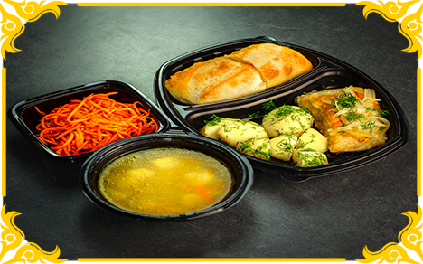
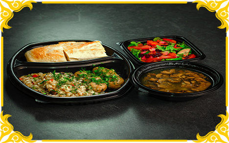
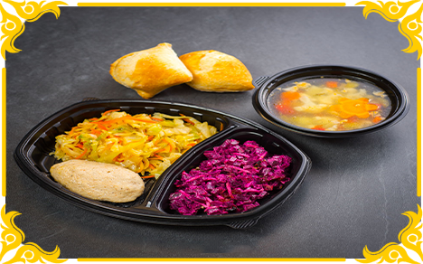
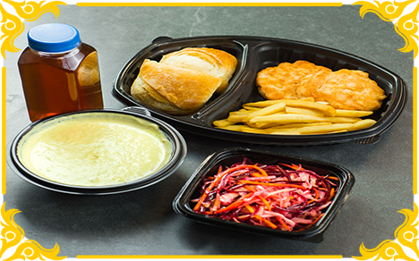
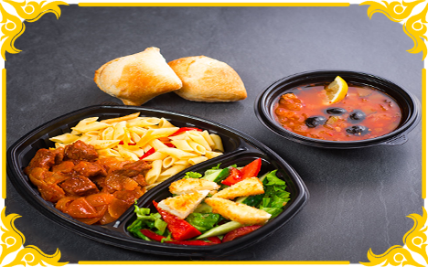
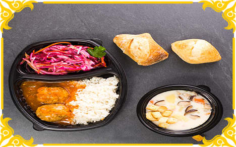
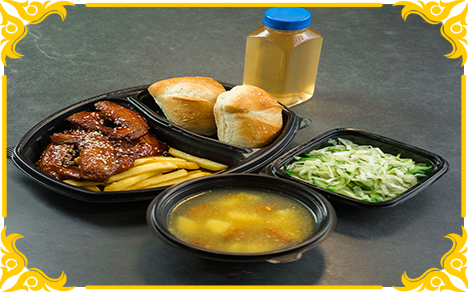
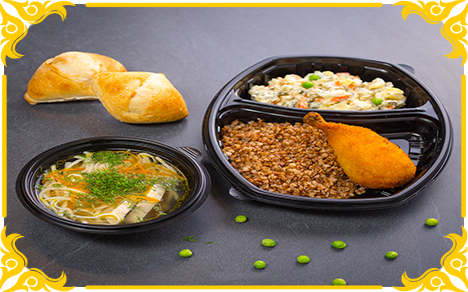

Готовые обеды
Обед на работе — это перерыв в череде выполнения обязанностей, личное время любого сотрудника.
Оно может быть радостным, вкусным и беззаботным, если в вашей компании организовано питание сотрудников. А может вызывать массу вопросов, например «Где пообедать сегодня?» и «Как сэкономить на обеде?».
Компания OOO "РУСДИВО" предлагает большой ассортимент готовых обедов для вас и ваших сотрудников.
В данном разделе указан не весь ассортимент товара. Для уточнения списка продукции или сборки обеда на заказ по своему желанию - обращаться по телефону: +7(960) 257-70-70
Готовый обед "Морской"
Состав:
В комплекте:
- Салат из свежих овощей, 150 грамм (огурцы, помидоры, перец болгарский, капуста пекинская, лист салата зеленый, масло растительное, соль, специи).
- Суп картофельный с фрикадельками из говядины, 350 грамм.
- Рыба судак жареный филе без костей, 340 грамм.
- Рис припущенный с маслом, 200 грамм.
В комплекте:
- Хлеб, столовые приборы, ланч бокс, супница, соль и перец.

Готовый обед "Корейский"
Состав:
В комплекте:
- Салат из острой моркови, 250 грамм (морковь острая).
- Суп чечевичный с курицей, 300 грамм.
- Рыба сазан жареная, 340 грамм.
- Отварной картофель с зеленью, 150 грамм.
В комплекте:
- Хлеб, столовые приборы, ланч бокс, супница, соль и перец.

Готовый обед "Классика"
Состав:
В комплекте:
- Салат из свежих овощей Винегрет, 200 грамм (картофель, лук, морковь, капуста квашеная, свекла, огурцы соленые, горошек зеленый, зелень, соль, специи, масло растительное).
- Суп картофельный с грибами, 350 грамм (грибы, мясо, лук, картофель, соль, специи).
- Люля – кебаб куриный, 250 грамм (курица, лук, соль, специи).
- Каша перловая с овощами, 150 грамм (каша перловая, соль, овощи).
В комплекте:
- Хлеб, столовые приборы, ланч бокс, супница, соль и перец.

Готовый обед "Богатырь"
Состав:
В комплекте:
- Салат из свежих овощей и фруктов, 150 грамм (свёкла, яблоки.)
- Капуста жареная, 350 грамм.
- Суп Министроне, 300 грамм (цветная капуста, помидоры, картофель, тыква, фасоль свежая, зелёный горошек свежий или замороженный, лук-порей, панчетта копчёная, кабачки, лук, морковь, сельдерей, оливковое масло, розмарин, петрушка, черный перец молотый, чеснок, лавровый лист).
- Котлета паровая, 150 грамм (курица).
В комплекте:
- Булочка 2 шт, столовые приборы, ланч бокс, супница, соль и перец.

Готовый обед "Анталья"
Состав:
В комплекте:
- Салат «Новый» из свежих овощей, 150 грамм (капуста белокочанная, морковь, свекла, чеснок, зелень, заправка для салатов, листья салата, перец).
- Суп пюре с брокколи и сельдереем, дополненный сухариками, 250 грамма (брокколи, сельдерей, соль, специи).
- Курица в кисло-сладком соусе, 200 грамм (курица, соус кисло-сладкий).
- Картофель фри, 150 грамм (картошка, соль).
- Компот яблочный, 250 мл.
В комплекте:
- Столовые приборы, ланч бокс, супница, соль и перец.

Готовый обед "Мафиозник"
Состав:
В комплекте:
- Салат овощной, 150 грамм (помидор, огурец, зелень, листья салата).
- Солянка мясная, 250 грамма (говядина на кости, огурцы солёные, лук репчатый, оливки без косточек, томатная паста, масло растительное, лавровый лист).
- Гуляш говяжий, 100 грамм (говядина).
- Макароны с овощами, 200 грамм (макароны, овощи).
В комплекте:
- Булочка 2 шт, столовые приборы, ланч бокс, супница, соль и перец.

Готовый обед "Столовый"
Состав:
В комплекте:
- Салат «Новый» из свежих овощей, 150 грамм (капуста белокочанная, морковь, свекла, чеснок, зелень, заправка для салатов, листья салата, перец).
- Суп сырный, 350 грамм.
- Тефтели куриные, 130 грамм (курица).
- Рис отварной, 150 грамм (рис).
В комплекте:
- Булочка 2 шт, столовые приборы, ланч бокс, супница, соль и перец.

Готовый обед "Американский"
Состав:
В комплекте:
- Салат «Зеленый», 150 грамм (капуста белокочанная, огурцы свежие, укроп, лимон, масло растительное, соль).
- Суп гороховый с копченой ветчиной, 350 грамм (горох, соль, специи, ветчина копченая, картошка).
- Крылья куриные острые Барбекю, 150 грамм (крылья куриные, соль, соус Барбекю).
- картофель фри, 150 грамм (картофель, соль, масло растительное).
- Напиток из сухофруктов, 300 мл.
В комплекте:
- Столовые приборы, ланч бокс, супница, соль и перец.

Готовый обед "Петербургский"
Состав:
В комплекте:
- Салат Мясной, 150 грамм (помидор, огурец, сметана, грибы, горошек, морковь, курица).
- Суп-лапша домашняя, 350 грамма (лапша, зелень, морковь).
- Котлета по-киевски, 100 грамм (курица).
- Гречка, 150 грамм (гречка).
В комплекте:
- Булочка 2 шт, столовые приборы, ланч бокс, супница, соль и перец.
